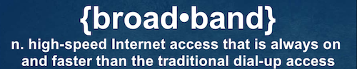

broadband
National Symposium on Community Scale Broadband Infrastructure
When:
December 7, 2010
Where:
Capitol Hill’s Longworth Building, room #1302, Washington, DC The Center for Social Inclusion (CSI) and the Center for Technology Innovation and Community Engagement (CTICE) invite you to participate in a National Symposium on Community Scale Broadband Infrastructure. We hope you’ll be able to join us for “Advancing Community Broadband: Transforming Community Economics through Broadband Technologies”, which will take place on Tuesday, December 7, 2010 in Washington, D.C. at Capitol Hill’s Longworth Building; room #1302. The meeting will take place from 12-4 p.m., and a light lunch will be served.
About the event:
Broadband is an investment in people
From the Broadband Commission for Digital Development’s report calling for leadership in developing broadband for all:
Blandin Broadband Conference
When:
October 13, 2010 - October 14, 2010
Where:
Baxter, MN This year’s Blandin Broadband Conference spotlights communities across Minnesota that are Cultivating a Culture of Use through ARRA broadband funding. Their goal is ambitious - to create technologically and economically vital rural communities, competing and thriving in the broadband economy, with sustainable broadband adoption, job growth and wealth creation.
Media, the Internet and Philanthropy
The Transmission Project has always recognized the need for supporting public media and technology—and its necessity for community and economic development. Luis Ubiñas, President of the Ford Foundation, recently made a similarly passionate argument:
FutureEverything 2010 Conference
When:
May 12, 2010 - May 15, 2010
Where:
Manchester
Website:
http://futureeverything.org We are excited to introduce the FutureEverything conference programme for 2010, our best and most ambitious yet. We are delighted to present the world’s best speakers under our conference themes of ImagineEverything, Unlimited Connectivity, Open Data and The City Experiment.
FCC & Knight Foundation Digital Inclusion Summit
When:
March 9, 2010
Where:
Washington, DC
Website:
http://www.digisummit.org FCC & Knight Foundation Host Digital Inclusion Summit at Newseum on March 9
Media Advisory: FCC & Knight Foundation Host Digital Inclusion Summit at Newseum on March 9
Summit Includes Overview of Working Recommendations
for Broadband Adoption in FCC’s National Broadband Plan
Broadband Adoption Accelerators
I’ve been taking time to digest the The Broadband Coalition’s report on Expanding and Accelerating the Adoption & Use of Broadband Throughout the Economy. What I appreciate most about the report is the systemic approach it takes: leveraging existing community infrastructure, programs and organizations while expanding their capacity to include broadband adoption and use.
DC Community Broadband Summit
When:
February 26, 2010
Where:
Washington, DC Join area residents, businesses and thought leaders at the District’s first-ever Community Broadband Summit (DC-CBS)
-a public forum designed to address the city’s digital divide.
DC-CBS is a joint effort of the Office of the Chief Technology Officer (OCTO), DC Public Libraries (DCPL), the Department of Parks and Recreation (DPR), DC Public Schools (DCPS), and the Department of Employment Services (DOES), as well as Cricket Wireless and One Economy Corporation.
Broadband according to the FCC?

When we attended the FCC’s workshop last week, one of the handouts was the FCC’s consumer publication Broadband Brochure. While informative, the publication does not break any new ground definitely: broadband is defined as “faster than dial-up service and it doesn’t tie up your telephone line like dial-up often does”; nor metaphorically: